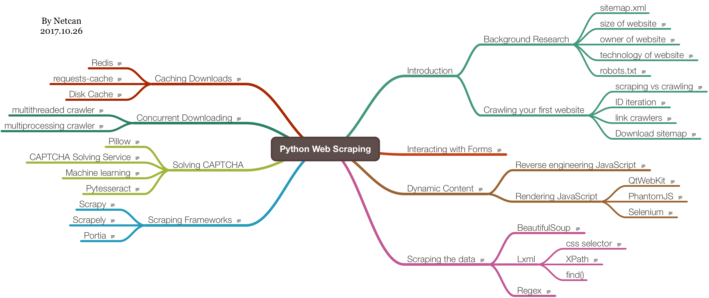

前言
最近想做一个关于爬虫的项目，就学了一下 Python 爬虫方面的，把《Python Web Scraping 2nd》这本书看完了，内容比较浅，能够了解实现一个爬虫需要涉及哪些方面。以下是整理的思维导图：

书上采用爬取自建网站 http://example.webscraping.com/ 的形式来介绍，要是以真实网站作为爬取对象的话，很有可能因为网站更新，导致书上内容失效，所以这样可以将注意力集中在编写一个爬虫的流程。不过书上的 url 与她给的自建网站 url 还是有点出入的，需要注意，拿个最明显的例子，sitemap.xml，书上的位于 http://example.webscraping.com/sitemap.xml，可实际上是http://example.webscraping.com/places/default/sitemap.xml，也就是说书上的 url 都少了/places/default/ 这部分。
以下提到的网站，若没特别说明，都是指 http://example.webscraping.com/ 这个网站，书上的代码地址https://github.com/PacktPublishing/Python-Web-Scraping-Second-Edition
书上提到了可以自己托管那个网站，跑到本地上，可是网站代码已经找不着了，然后我就看看这本书第一版提到的网站，也有代码，下到电脑上却跑不起来，就懒得折腾了，直接用在线的吧。
爬取网站的时候，需要注意每次请求的时间间隔，若小于一秒，就会被临时 Blocked，还有可以注册登录网站，用来修改国家的信息，不过网站会每隔一小时恢复，所以怎么改都没关系。
现在我就大概写写做一个爬虫需要哪些步骤吧。
背景调查
首先是调查网站背景，比如网站主人、架构、规模等等。
- 网站主人可以
python-whois这个包进行查询 - 架构（技术栈）可以用
detectem,Wappalyzer等工具查询 - 规模可以在 Google 用 site 关键字进行检索。
然后需要关注的是 sitemap.xml 和robots.txt这两个特殊的文件，
sitemap.xml，顾名思义，网站地图，也就是网站各个页面的索引，不能太依赖这个，因为有可能会漏掉一些页面的robots.txt，这个文件主要定义了一些规则，例如哪些页面不能被爬取，需要注意，违反可能会被 Blocked
爬取网站
sitemap.xml 方法
这个方法比较简单，提取 sitemap.xml 中的链接，然后依次下载 / 提取即可。
遍历方法
这里有两个名词，scraping和crawling，主要区别是前者针对具体的网站，而后者比较通用。
进入网站主页，可以看到一堆国家名与国旗，然后下面有分页，所以可以采用宽度优先搜索的方法，就能对整个网站进行遍历了。
- 准备一个队列
- 将起始页 url（主页）入队
- 从队头取出一个 url
- 下载 url 的内容，提取内容中的 url，若 url 符合规则，且未爬过，则入队
- 重复 2，直到队列为空
这里我再补充一点，在同等的时间下，也可以采用深度优先搜索的方法，这样得到的信息比较深，而广度优先搜索得到的信息比较广 = =
遍历的时候需要注意陷阱（例如无限爬取，可以设置一个深度，当达到这个深度就跳出，在网站中体现的就是最多爬取的页数了），再添加一个回调函数接口用于处理爬取的内容（用于收集数据）。
提取数据
遍历的过程中，只下载的话没啥意义，那么需要提取页面中的数据，然后收集起来。
每次下载页面的时候，将页面内容传给一个回调函数用于提取数据。
提取有以下方法：
- lxml
- regex 表达式
- BeautifulSoup
有以下关系：
| 速度 | 难度 |
|---|---|
| lxml | 快 |
| regex 表达式 | 快 |
| BeautifulSoup | 慢 |
lxml 提取数据可以采用选择器的方法：
- css selector
- XPath
据说 XPath 比较万能，能提取 css 选择器做不到的内容，但是比较复杂，而且 css 选择器语句内部也会转换成 XPath 语句。
数据提取后，需要保存到磁盘上，比如选择保存到 csv 文件中，待今后使用。
缓存下载内容
缓冲下载的内容，这样当需要重新提取额外数据的时候就不用重新下载了。
书上介绍了以下方法：
- HashMap（dict，内存中）
- 磁盘文件中
- Redis
简而言之，其实就是用一个 Key-Value 数据结构（KV 对象）来存储，下载内容的时候，先检查 KV 对象中是否有 url 这个 Key，有的话直接读取其 Value，没的话，下载好内容，将 url 作为 Key，内容作为 Value 进行存储即可。
关于存储到磁盘文件中，定义一个 Dict-like 的类，实现 __getitem__ 和__setitem__方法，分别用于从 url 文件中读取数据、写入数据到 url 文件。书上以 url 作为文件名进行保存，所以需要对字符进行特殊处理，也就是说需要关注文件系统对文件名的支持性，太麻烦了，我直接对 url 进行 hash 运算作为文件名进行保存。
可以考虑压缩数据以节省空间。也可以保存时间戳，这样就可以实现每隔一段时间进行更新。
最后一种方法就是利用 Redis 了，因为 Redis 是一种 KV 数据库，所以可以很容易地用上，编写一个 Dict-like 类进行封装就行了。
如果用 requests 库进行请求的话，那么有一个包可以用到：requests-cache，它可以缓存 requests 库的请求（选择保存到 Redis），就不用自己实现缓存模块了。
并发处理
并发处理，大大提高速度，需要注意的是，若对一个域名进行并发下载，很容易被封，建议同一个域名下载间隔至少 1s。
关于并发处理，书上说的也很简陋，没有考虑到竞争机制，比如加锁来解决。不过提到一个 Celery 工具，可能很好的解决竞争问题。
多线程
因为线程间很好的共享变量，爬虫主要用到的就是待下载的 urls 队列了，线程间直接共享 urls 队列。
一个线程从 urls 队列中不断取出一个 url 并下载，然后提取内容中的符合的 url 再入队，直到 urls 队列为空，这个过程和前面提到的 遍历方法 一致。
再用一个线程队列来维护多个线程。
多进程
由于是多进程，也需要共享队列，那么这时候可以考虑采用 Redis 来保存 urls 队列，可以分布式运行。
每个进程绑定（运行）在一个 cpu 上，一个进程又运行多个线程，大大提高了效率。
动态内容处理
这主要是网站用 AJAX 这类技术进行数据渲染，提高用户友好性。
虽然处理起来比静态页面要复杂的多，但是数据层与渲染层分离，反而更容易的 提取 数据。
有以下方法：
- Javascript 逆向工程
- 渲染 Javascript
Javascript 逆向工程
利用 Chrome 的开发者工具，通过对网络请求进行观察，找到相关请求进行分析，难度较大，有时候 js 还是压缩混淆过了的。
如果网站提供了开放接口，那么就比较轻松了，查阅相关文档来做。
渲染 Javascript
这个方法简单粗暴，利用浏览器方式对 Javascript 渲染过后的 html 进行数据提取。
有以下工具可以做到：
- QtWebKit
- Selenium
- PhantomJS
QtWebKit 这个工具略繁琐，跳过。 而且书上介绍的是 Qt4，到 Qt5 已经没这个模块了。
Selenium 可以对浏览器进行自动化操作（交互），直接可视化渲染结果，方便 max，调试起来也是很方便的。也正是因为运行的时候会弹出浏览器，不适合跑在服务器上，这时候 PhantomJS 派上用场了，配合 Selenium 使用。
PhantomJS 是一款 headless browser，可以跑在服务器上。因为看不到浏览器窗口，可以用 save_screenshot()截取当前页面截图或者 page_source 查看源码来调试。
采用浏览器方式可以很好的对抗反爬虫机制。
表单交互
处理表单。需要注意 Cookies，还有 Session 的保持。
需要注意陷阱（隐藏字段），很容易被反爬虫机制搞掉。
若采用 Selenium 的话，等待响应的时候需要注意判定条件（比如判断跳转页面的特定元素）。
解决验证码
因为网站的验证码比较简单，验证码字体都是黑色的，直接提取黑色的内容，然后用 OCR 模块进行识别就行了，OCR 用的是 Pytesseract 这个库。
其次是采用人工识别的方法，例如 https://9kw.eu/ 这种网站。
爬虫框架
关于框架，书上介绍了以下几种：
- Scrapy
- Portia
- Scrapely
这本书提到的方法，Scrapy 这个框架几乎都能解决，速度还非常快。
而 Portia 是一种可视化爬虫框架，建立在 Scrapy 框架之上，鼠标点点点就能爬取数据。安装比较麻烦，没装成功，就没尝试了。
Scrapely 是 Portia 使用的库，给出 html 和其中待提取的数据，就可以训练出解析器模型，用于提取同样结构 (html) 的数据。
总结
关于爬虫的技巧，就介绍这么多了，最后书上再利用这些技巧爬取一些主流网站，例如 Google 搜索页面、Facebook 等等。